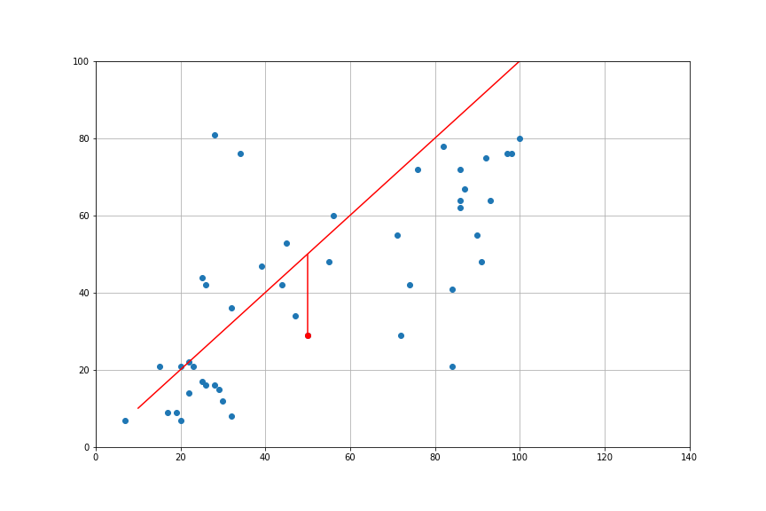
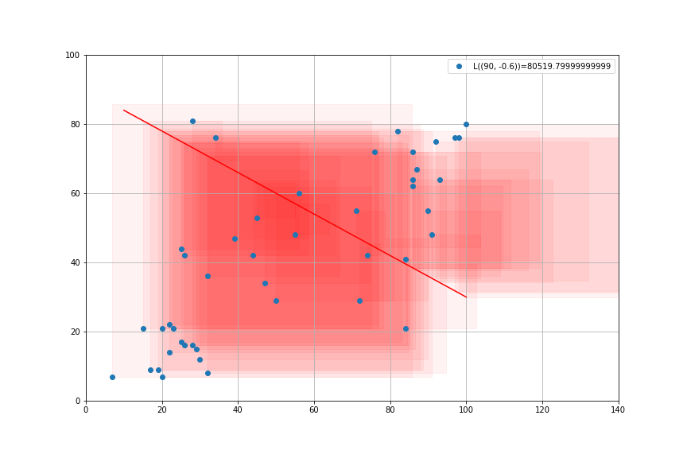
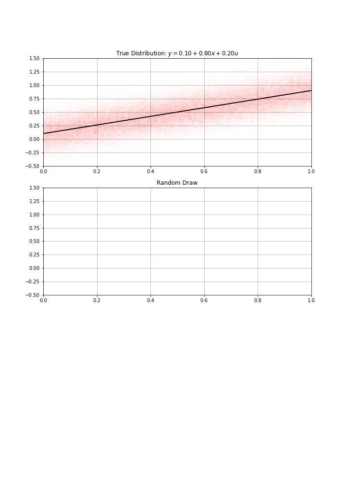
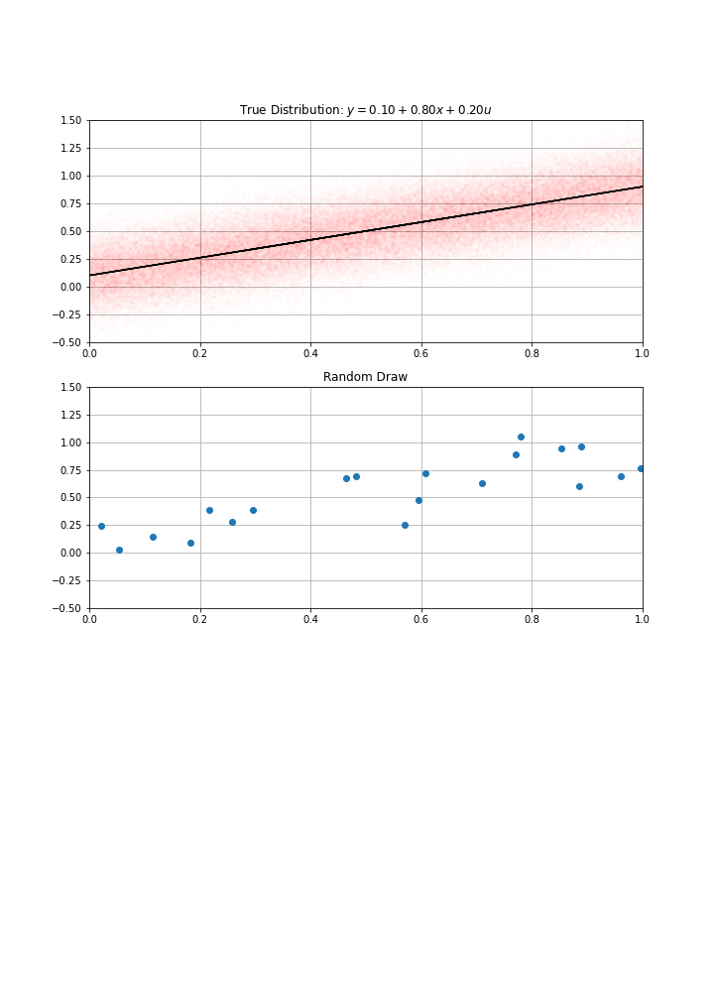

Linear Regression
Data-Based Economics
Quick look
import statsmodels.api as sm
dataset = sm.datasets.get_rdataset("Duncan", "carData")
df = dataset.data
df.head()| type | income | education | prestige | |
|---|---|---|---|---|
| accountant | prof | 62 | 86 | 82 |
| pilot | prof | 72 | 76 | 83 |
| architect | prof | 75 | 92 | 90 |
| author | prof | 55 | 90 | 76 |
| chemist | prof | 64 | 86 | 90 |
plt.plot(df['education'],df['income'],'o')
plt.grid()
plt.xlabel("Education")
plt.ylabel("Income")
plt.savefig("data_description.png")
A Linear Model
- Consider the line: \[y = α + β x\]
- Several possibilities.
- Which one do we choose to represent the model?
- Need some criterium.


Least Square Criterium
- Compare the model to the data: \[y_i = \alpha + \beta x_i + \underbrace{e_i}_{\text{prediction error}}\] - Square Errors \[{e_i}^2 = (y_i-\alpha-\beta x_i)^2\]
- Loss Function: sum of squares \[L(\alpha,\beta) = \sum_{i=1}^N (e_i)^2\]



Minimizing Least Squares
- Try to chose \(\alpha, \beta\) so as to minimize the sum of the squares \(L(α, β)\)
- It is a convex minimization problem: unique solution
- This direct iterative procedure is used in machine learning
 
Predictions
- It is possible to make predictions with the model:
- How much would an occupation which hires 60% high schoolers fare salary-wise?

- Prediction: salary measure is \(45.4\)
- OK, but that seems noisy, how much do I really predict ? Can I get a sense of the precision of my prediction ?
Look at the residuals
- Plot the residuals:

- Any abnormal observation?
- Theory requires residuals to be:
- zero-mean
- non-correlated
- normally distributed
- That looks like a normal distribution
- standard deviation is \(\sigma(e_i) = 16.84\)
- A more honnest prediction would be \(45.6 ± 16.84\)
What could go wrong

- a well specified model, residuals must look like white noise (i.i.d.: independent and identically distributed)
- when residuals are clearly abnormal, the model must be changed
Graphical Representation

Statistical model
-
Imagine the true model is: \[y = α + β x + \epsilon\] \[\epsilon\_i \sim \mathcal{N}\left({0,\sigma^{2}}\right)\]
- errors are independent …
- and normallly distributed …
- with constant variance (homoscedastic)
-
Using this data-generation process, I have drawns randomly \(N\) data points (a.k.a. gathered the data)
- maybe an acual sample (for instance \(N\) patients)
- an abstract sample otherwise
-
Then computed my estimate \(\hat{α}\), \(\hat{β}\)
-
How confident am I in these estimates ?
- I could have gotten a completely different one…
- clearly, the bigger \(N\), the more confident I am…
  
Fisher-Statistic
- Test
- Hypothesis H0: \(α=β=0\) (model explains nothing)
- Hypothesis H1: (model explains something)
- Fisher Statistics: \(\boxed{F=\frac{Explained Variance}{Unexplained Variance}}\)
- Distribution of \(F\) is known theoretically.
- Assuming the model is actually linear and the shocks normal.
- It depends on the number of degrees of Freedom. (Here \(N-2=18\))
- Not on the actual parameters of the model.
- In our case, \(Fstat=40.48\). What was the probability it was that big, under the \(H0\) hypothesis?
- extremely small: \(Prob(F>Fstat|H0)=5.41e-6\)
- we can reject \(H0\) with \(p-value=5e-6\)
- In social science, typical required p-value is 5%.

Student tables